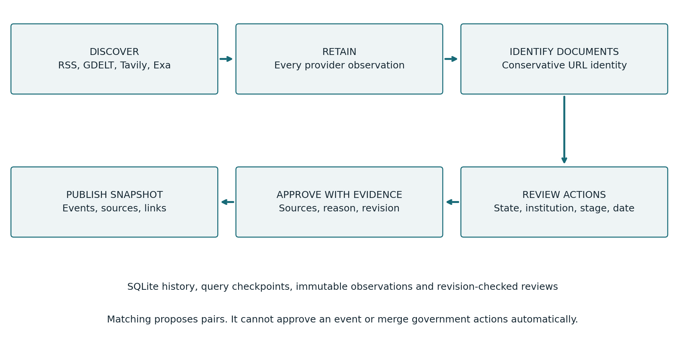
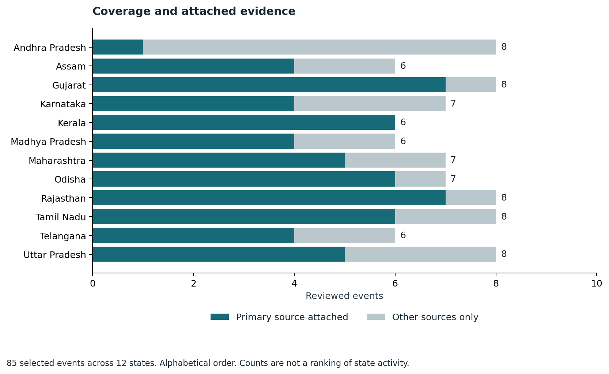
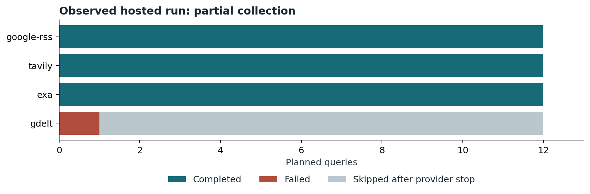
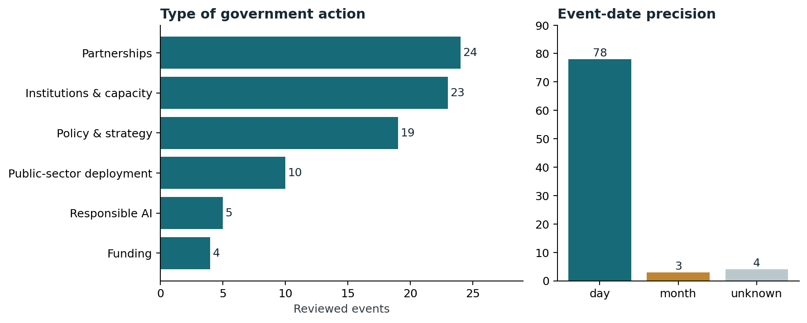

Work Test Submission SAFL Vishnu Kosuri
Work Test Submission SAFL Vishnu Kosuri
AI-related policy activity across Indian states | Research cutoff: 10 November 2026
The project records 85 reviewed government-action milestones across 12 states, with 113 source documents and 137 event-source associations. It combines a source-linked research dataset with a persistent collection system. New search results remain unverified candidates until their government action, state, date and evidence have been reviewed.
Live dashboard: https://vishnu0906.github.io/state-ai-policy-observatory/
Public source and commit history: https://github.com/VISHNU0906/state-ai-policy-observatory
What is delivered
The submission folder contains the reviewed CSV and JSON data, source and association tables, a runnable source ZIP, a Git history bundle, an offline dashboard, three research reports, this technical submission, figures with underlying values, a persistent database checkpoint, and a Hugging Face upload-ready dataset folder. START_HERE.md is the file index.
Research scope
The window is 1 January 2024 through 10 November 2026. The 12 states cover southern, western, northern, central, eastern and northeastern cases. Selection favours verifiable government actions and varied administrative routes: policies, budgets, institutions, agreements, public services and safeguards. Every state has at least six reviewed records. The sample supports comparisons of documented approaches, not state rankings or national prevalence estimates.
The key design decision
Keep provider observations, source documents and government events separate. Ten outlets can report one signing. One article can describe three separate agreements. Treating either an article URL or a similar headline as event identity loses those distinctions.

1. Research design and evidence
Include a record when the evidence identifies an AI-related action and a state-government institution, department, public authority, state university or specific state commitment. Exclude Union-only announcements without a state action, private launches without a documented state role, unsupported snippets, generic digitisation and out-of-window actions. AI must mean artificial intelligence in context; some Assam results use it for artificial insemination.
The initial corpus comes from six versioned research inputs. Exa and Tavily supported targeted discovery and retrieval; official orders, budgets, gazettes, departmental publications and attributable news reports support the records. Firecrawl was attempted during research but the connected account had exhausted credits. A retrieved snippet is a lead, not sufficient evidence.

A primary-source flag means a primary document is attached. It does not certify every statement or date. Syndicated reports can repeat the same briefing, so source counts are not independent confirmations.
Interpretation
Approval establishes a decision; signing establishes an agreement; launch establishes public introduction; operational status requires evidence of actual use. None alone proves accuracy, fairness, adoption or public benefit. Do not sum programme envelopes, annual budgets, tender estimates, private investment and actual spending.
2. Collection and recovery
Google News RSS supplies free news discovery. GDELT is a second free discovery channel, but provider-seen timestamps are not publication dates. Tavily and Exa add optional search coverage through encrypted repository secrets. GNews API, NewsAPI and Crustdata adapters are available but require suitable credentials and plan terms. Google News RSS and GNews API are different services. Optional extraction uses local Trafilatura for HTML and pypdf for PDFs; hosted extraction must be explicitly selected.
The scheduled GitHub Actions workflow runs daily at 02:17 UTC, or 07:47 IST, on a best-effort schedule. Each planned query is saved before the request. Each completed query commits its observations. Failed, skipped and capped queries remain visible. Keyed request attempts reserve from persistent monthly limits before dispatch; failures count. These controls limit this workflow, not all activity or billing in a provider account.
SQLite stores immutable observations, query status, review decisions, source links and import versions. Public data-history snapshots use compressed, content-addressed 64 KiB blocks and a checksum manifest. Restore failures stop collection. Concurrent remote changes prevent overwrite. The system does not depend on expiring Actions artifacts to preserve history or request budgets.

The latest verified hosted run returned 358 observations across 328 distinct document URLs. It completed 36 queries; 34 reached the configured result cap. GDELT failed once and its 11 remaining queries were skipped. The workflow finished successfully while the data run correctly remained partial. This is an observed run, not a long-run reliability benchmark.
A deliberate interruption retained 188 observations and eight request reservations. Recovery resumed 17 unfinished queries; the final audit found none unfinished. Details and run links are in docs/RELEASE.md and runs/durable-system-verification.json.
3. Normalization and sorting
State normalization applies Unicode NFKC, whitespace cleanup, case folding and explicit aliases to structured state fields. U.P. and Uttar-Pradesh become Uttar Pradesh; Telengana becomes Telangana; Orissa becomes Odisha. Curated typo mappings are auditable. Other near matches produce suggestions only. An occurrence of the word up in article text does not identify Uttar Pradesh. Non-Latin transliteration is not implemented.
The review helper returns raw input, normalized value, method and status. It accepts valid ISO dates, English named months, ordinal day forms and timezone-aware ISO or RFC 2822 timestamps. For timestamps describing an instant, conversion to IST is explicit. A date printed on an order remains a calendar date.
02/03/2025 stays ambiguous unless the source convention declares day-first or month-first. 13/02/2025 is unambiguous. Yesterday needs an explicit source-date anchor. Early 2025, approximate dates and date ranges remain unresolved for review. Invalid dates, including 29 February in a non-leap year, are not accepted. Missing markers become unknown values.

A month-only date stays YYYY-MM and a year-only date stays YYYY. Lower and upper bounds support sorting and filtering without pretending an exact action day is known. Known lower bounds sort newest first; narrower precision breaks ties, followed by state and stable ID. Unknown dates sort last. Python and dashboard tests verify this ordering.
The new helper is available for review-time use; it does not retroactively rewrite the 85 reviewed events. Provider publication estimates, retrieval timestamps and event dates remain distinct. Full examples, commands and limits are in docs/NORMALIZATION.md.
4. Deduplication and review controls
The first layer identifies repeated document URLs conservatively: lowercase hosts, remove fragments and known tracking parameters, preserve document IDs and meaningful query values. Google News redirects remain separate from publisher URLs until verified. Every durable provider/query observation remains stored even when its document identity is shared.
The second layer proposes related document pairs using title-token inverse-frequency weights, cosine similarity and token overlap. Stage, reversal and numeric conflicts are recorded as warnings. Suggestions cannot merge documents into approved events. At threshold 0.45, a 34-pair development diagnostic retrieves 3 of 12 positive pairs and also suggests 6 of 22 distinct pairs: precision 0.333, recall 0.25. This weak result is reported rather than presented as production accuracy.
Worked event boundaries
Uttar Pradesh has separate AI mission announcement, budget and cabinet approval records. Similar mission wording does not make those actions duplicates. Madhya Pradesh has separate AI-lab, BHASHINI and proposed-centre agreements even when a conference account discusses several together. Odisha policy notification and later operational rules are separate milestones. Repeated reports of the same signing attach to one reviewed action.
An event decision checks state, responsible body, counterparty, initiative, action, stage and date together. A changed amount, cancelled tender or later rollout must not be absorbed by title similarity. Where the evidence does not support finer instrument boundaries, retain an explicitly qualified grouped record rather than inventing agreements.
Companion dataset integration
The current external snapshot contributes 543 proposals across 13 states and 1,076 source links. These remain proposals, not additions to the 85-event release. The audit found 977 source links still using Google redirect URLs, two literal backspace characters in a reversal pattern, and 31 shared headlines across the external evaluation halves. These defects weaken claims of clean URLs and independent evaluation.
Imports are frozen by content hash and repeated imports do not erase decisions. Reviewer actions require a reason and expected revision. Manual event merges preserve evidence and the superseded ID; guarded restoration can undo them. The published dashboard remains built from reviewed research JSON, so new database approval requires an explicit release reconciliation before publication.
5. Reproduction, limits and submission map
Run the project
Extract state-ai-policy-source.zip. With Python 3.11 or later, run python -m unittest discover -s tests -v, then python pipeline.py build. Serve dist with python -m http.server 8765 --directory dist. The static dashboard can also open offline. Run node tests/test_dashboard_sort.js for the browser ordering check. API keys are unnecessary for the frozen build and tests.
Optional report and figure regeneration uses matplotlib and ReportLab through build_submission.py. Local article extraction has separate requirements-extraction.txt dependencies. The source Git bundle preserves development history; the database checkpoint preserves candidate state and export tables. SHA-256 manifests identify file contents.
Validation and limits
Tests cover repeat-safe imports, failed-transaction rollback, immutable audit rows, review revision conflicts, source references, rejection persistence, merge restoration, interrupted-run recovery, request limits, history corruption, concurrent updates, date ordering and normalization. Tests demonstrate those behaviours, not factual completeness of the internet corpus.
Current limits include predominantly English-web evidence, incomplete regional-language discovery, unresolved Google redirects, no scanned-PDF OCR, no comprehensive browser-rendered extraction, result caps, and no measured corpus-wide recall. Title matching is unsuitable for automatic event merging. A single successful extraction is not proof of relevance. No API fallback is treated as a guarantee of free account-wide use.
Files for review
data/events.csv is the submission dataset. data/sources.csv and data/source_observations.csv provide evidence and joins. reports/Rationale.pdf is the one-page rationale. reports/Research_Report.pdf interprets the state evidence. reports/Collection_Architecture.pdf compares collection options. reports/Technical_Submission.pdf is this document. figures/ contains editable SVG and PNG charts with values. huggingface_dataset/ is ready to upload, with separate event, source and association configurations.
The Hugging Face package excludes source excerpts and full article bodies. No blanket third-party content license is asserted. Its dataset card explains scope, missingness, joins, limitations and rights. It has not been uploaded automatically.
Final handover
Upload the complete release directory to Drive and add the resulting folder link to the submission copy. The native Google Doc contains the same technical account and public project links. Confirm the reviewer access and copy settings required by the assignment before submitting its link in ClassMarker. Creating this package does not submit the work or notify a hiring contact.